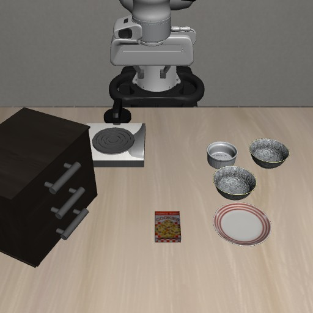
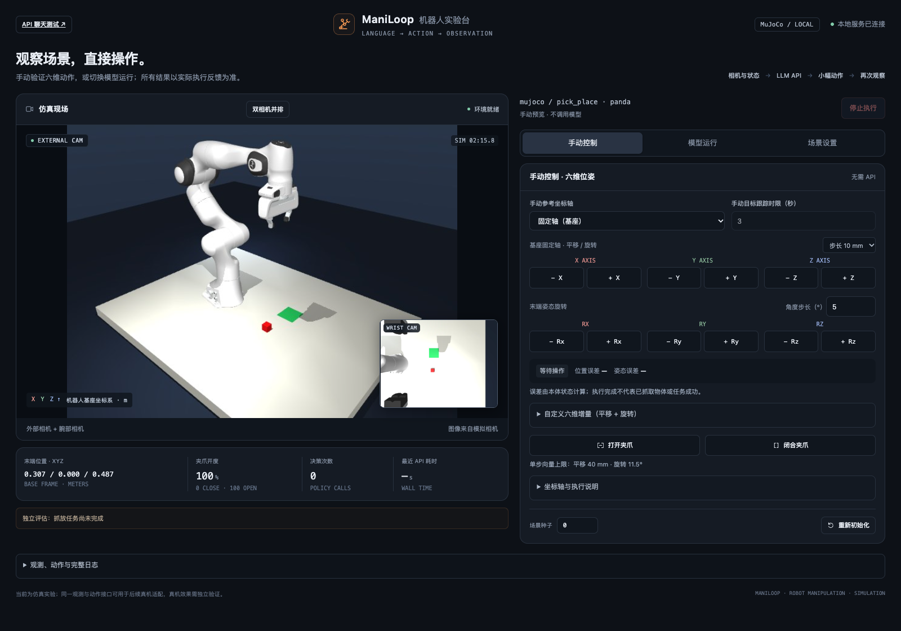
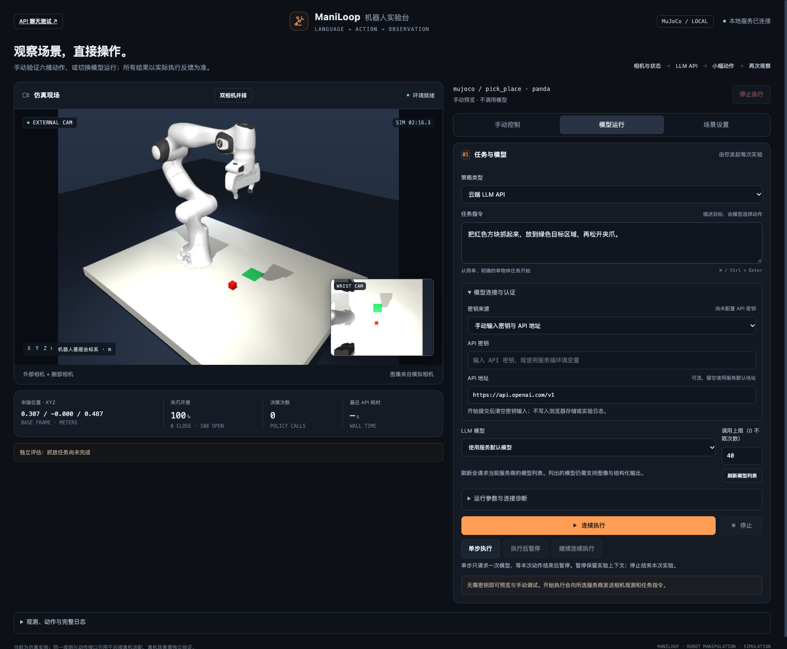
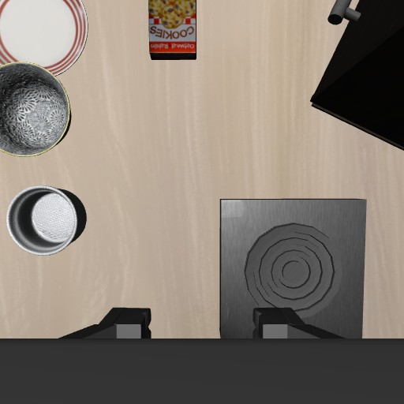

One framework, multiple policies
Connect GPT vision and structured actions, LIBERO-specific local VLA presets, or Jev text primitives. Each policy keeps its declared inputs and action protocol.
Explore the architectureConnect model decisions to a physical feedback loop. Explore MuJoCo, LIBERO, robosuite and RoboCasa through one local workspace, with explicit actions and inspectable feedback.
Inspect a saved LIBERO run in your browser. The live, modular workspace runs on your machine.

Feedback to the model uses only camera images and proprioception available on a real robot; no privileged simulator ground truth is provided. The controller computes TCP error from the model's previous command and the measured post-action TCP position, without object ground truth. Action execution completion does not mean task success.
Pause to read the model's saved action note. This page makes no model requests.
The policy receives only declared sensor observations.
The evaluator stays separate.
RECORDED SKILLS
Select a task to play its recorded actions above. Each card is one independently verified episode, not a benchmark success rate.
Run time includes model planning and waiting, simulation execution and recording; environment initialization and policy loading are excluded. Video playback follows simulation time.
01 / THE FRAMEWORK
Connect environment adapters, model policies and local control. Inspect the requested action, the measured motion and the independently recorded result.
Camera RGB where supported Robot proprioception
SENSOR INPUTGPT / VLA policies Jev text primitives
POLICYValidate and track targets MuJoCo backends
LOCAL CONTROLNew images and motion Execution status and error
FEEDBACKConnect GPT vision and structured actions, LIBERO-specific local VLA presets, or Jev text primitives. Each policy keeps its declared inputs and action protocol.
Explore the architectureJog XYZ, rotate Rx/Ry/Rz, or combine translation and rotation in fixed or tool axes. Inspect position and orientation error. Manual control needs no model key.
Understand manual pose controlInspect decision-level observations, action notes and feedback across backends. LIBERO additionally supports complete control-step recordings and continuous MP4 export.
Record and exportChoose the scene in the local workspace. Optional backends keep separate runtimes, controllers and independent task evaluators.
Panda and ARX5 tabletop scenes for manual control, pick-and-place and pushing experiments.
Setup and scopeOfficial task suites and initializations. The recorded GPT examples and local VLA presets on this page use LIBERO.
Setup and scopeFive Panda tasks: Lift, Stack, PickPlaceCan, Door and NutAssemblySquare, with dual-camera observation and local control.
Setup and scopeFour kitchen tasks: open or close a drawer, open a cabinet, and position a mug. Arm and gripper control; no navigation planner.
Setup and scopeBackend integration is not a model success result. The existing LeRobot presets remain LIBERO-specific; robosuite and RoboCasa do not yet provide complete control-step video export.
THE LOCAL APPLICATION
Manual control, model runs and scene settings have dedicated panels beside the cameras. These actual local-application screenshots use the built-in Panda tabletop scene; the website does not run their controls.


Choose a backend and task, then apply to rebuild the environment. Editing a task instruction does not change the official evaluator. The stop control remains available across panels.
02 / THE EPISODE
Actual simulator footage with an independent task result. This page plays saved media; it does not call a model or run a simulator.
Model and settings are loaded from the episode
Observation points from the same episode, paired with action notes. These are not continuous video.

Selected decision frames · Original order · Not continuous video
Loading run conditions
Task completion is determined by the independent simulator evaluator. One episode does not establish a benchmark success rate.
03 / MODEL EXAMPLES
Recorded examples on an official LIBERO task. Each row describes one run, with its own controller and inference setup.
| Model | Official result | Policy calls | Inference calls | Control steps | Configuration and scope |
|---|---|---|---|---|---|
| Loading recorded model examples | |||||
These are individual examples, not success-rate estimates. Budgets, action chunks and control methods differ; step counts and timings do not form a speed ranking.
Check configurations and results04 / GET STARTED
Start with the local workspace and manual control, then choose an optional backend and policy. Simulation runtimes and VLA inference stay isolated.
macOS / Linux · Python 3.12
git clone https://github.com/Daniel-rmc/ManiLoop.git
cd ManiLoop
python3.12 -m venv .venv
.venv/bin/python -m pip install -r requirements.txt
.venv/bin/python -m maniloop demoOpen 127.0.0.1:8765 for the built-in tabletop workspace. Manual controls need no model key. Use another terminal, or stop with Ctrl+C, before installing an optional backend.
Full setup and Windows instructionsA separate Python 3.10 simulation environment
.venv/bin/python -m pip install uv
.venv/bin/python scripts/setup_libero.py \
--uv .venv/bin/uv
.venv/bin/python -m maniloop demo \
--backend libero --port 8767Open 127.0.0.1:8767 on your machine. Git, network access and a supported graphics setup are required. VLA weights are optional.
Requirements and headless setupUse the dedicated installers for robosuite and RoboCasa. Each creates its own Python 3.11 runtime; RoboCasa additionally needs kitchen assets.
Choose GPT through a compatible image and structured-output API or official Codex login, a local LIBERO VLA preset, or Jev text primitives with a separate TypeSafe API key. Diagnose the connection before a small action.
Jev receives explicit instructions and public proprioception, not images. It selects a bounded primitive; local code handles units, coordinates and motion. It does not visually locate objects or provide autonomous grasping.
Model requests use the selected provider or account quota. Switching workspace panels does not trigger inference.
Connect your model. Inspect its actions.
Questions and contributions